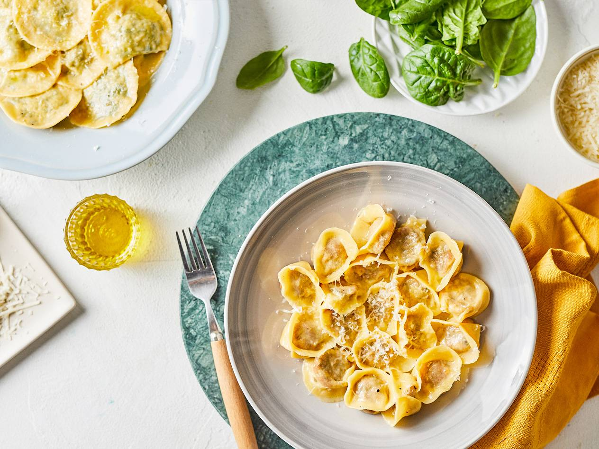

Goat cheese and spinach pie

Ingredients for the filling
- 2 handfuls of fresh spinach
- 100 g of soft goat cheese
- 1-2 slices of toast bread
- 2-3 tablespoons extra virgin olive oil
- freshly ground black pepper
- salt
Ingredients for the butter mirror
- 100-200 ml stock or pasta cooking juice
- 1-2 tablespoons of butter
- a few drops of lemon juice
1-2 tablespoons Lovilio Grana Padano (grated)
- freshly ground black pepper
- salt
Baking instruction
- Wither the spinach in a little olive oil in a pan, then chop it on a cutting board. Put it in a mixing bowl, add the goat cheese, the bread chopped in a food processor, and the spices, and make the filling.
- Roll out the dough and spread one half thinly with the beaten egg. Carefully mark the dough on the rolled out part with a toothpick. Place a teaspoonful of filling in the center of the marked circles. When we are satisfied with this, we fold the other half of the dough over it. Starting from the filling, we press out the air with our fingertips. Arrange the filling in the center of the dough with the rounded half of the toothpick. Scoop out the ravioli, then take it in your hand and see if it sticks together everywhere. At this point, you can freeze the dough, which you can take out of the freezer at any time later.
- In plenty of boiling, salted water, cook the leeks until ready in 3-4 minutes. Don't forget to turn them over in the butter dish, they will still soften there. If you are working with dough taken out of the freezer, let it come to room temperature for 5-10 minutes and then cook it. Set aside 1-2 dl of the cooking stock.
- Heat the juice in a pan, add the cold butter, but don't boil it, just let it melt and become homogeneous. Stir in the drained pasta, sprinkle with a few drops of lemon juice at the end, then sprinkle with Parmesan and pepper.
If you want to read it in Hungarian, click here/Ha el szeretnéd olvasni magyarul is, kattints ide
If you like this food, maybe you are interested in ... . If you want to check it, just click on the name